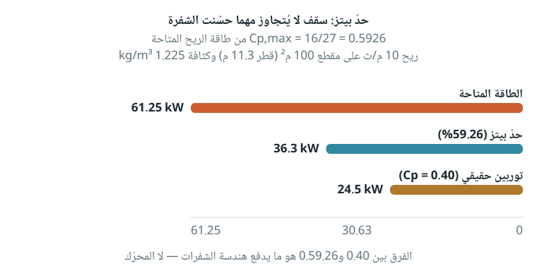

حدّ بيتز
Betz limit
حدّ بيتز هو أقصى كفاءة نظرية لتوربين رياح، ويساوي 16/27 = 0.593. أي أن التوربين لا يستطيع استخراج أكثر من 59.3% من الطاقة الحركية في الهواء المار عبر مساحة دورانه. والسبب أن الهواء يجب أن يبقى متحركاً بعد التوربين ليخرج، فلو استُخرجت الطاقة كلها توقف الهواء ومنع مرور غيره.
التوربين يستخرج الطاقة من الهواء بإبطائه، لكنه لا يستطيع إبطاءه إلى الصفر لأن الهواء عندئذ يتوقف ولا يمرّ هواء جديد. فبين حالة عدم الإبطاء (لا طاقة مستخرجة) والإبطاء الكامل (لا تدفق) توجد حالة وسطى مثلى. وحساب بيتز يبيّن أن المثلى عند إبطاء الهواء إلى ثلث سرعته الأصلية، وتعطي 16/27 من الطاقة المتاحة. مثال: رياح بسرعة 10 m/s وكثافة 1.225 kg/m³ عبر مساحة 100 m²: الطاقة المتاحة = 0.5×1.225×100×1000 = 61250 W = 61.25 kW، وأقصى ما يمكن استخراجه 0.593×61.25 = 36.3 kW.
كيف تعمل الظاهرة؟
التوربين يعمل بتبادل كمية الحركة: يبطئ الهواء فيستخرج منه طاقة حركية. لكن الهواء المبطأ يجب أن يخرج من الجانب الآخر، فلو أُبطئ إلى الصفر لتوقف التدفق كله ولم يمرّ هواء جديد. ولهذا توجد سرعة خروج مثلى غير صفرية. وبتحليل كمية الحركة والطاقة معاً ينتج أن السرعة المثلى عند الخروج ثلث السرعة الأصلية، وأن الكفاءة عندها 16/27. وهذا التحليل يفترض تدفقاً أحادي البعد بلا احتكاك ولا دوران، فهو سقف أعلى لا تصميم.
العلاقة بالأرقام
P = 0.5·ρ·A·v³·Cp، وCp = 4a(1−a)² حيث a معامل الحثّ. وتُعظَّم Cp عند a = 1/3، فتعطي 4×(1/3)×(2/3)² = 16/27 = 0.5926. والطاقة المتاحة تتناسب مع v³، فمضاعفة السرعة تضاعف الطاقة 8 مرات، ولهذا تُبنى التوربينات في مواقع عالية السرعة. مثال: من 8 إلى 10 m/s تزيد الطاقة بنسبة (10/8)³ = 1.95، أي 95%.
مفاهيم متقاربة
يُفرَّق بين حدّ بيتز وكفاءة التوربين Cp: الأول سقف نظري والثاني قيمة فعلية أقل. ويُفرَّق بين Cp ومعامل القدرة: الأول كفاءة تحويل الطاقة في الرياح، والثاني نسبة الإنتاج الفعلي إلى القدرة الاسمية على مدار السنة. ويُفرَّق بين حدّ بيتز وحدّ كارنو: الأول لتوربين رياح والثاني لمحرّك حراري، ولا علاقة بينهما. وأخيراً يُفرَّد بين حدّ بيتز في التدفق الحر وحدوده في تدفق محصور داخل نفق، حيث تختلف القيمة.
حدود التطبيق
حدّ بيتز لا يصف التوربينات الحقيقية لأنها تعمل بدوران وتدفق ثلاثي الأبعاد واحتكاك. ولا يصف توربينات المحور الرأسي التي لها سقف مختلف. ولا يصف التوربينات في مصفوفة حيث تتفاعل مع بعضها. ولا يصف التوربينات في تدفق محصور داخل نفق. وأخيراً لا يعطي الطاقة السنوية، التي تحتاج توزيع سرعات الرياح لا سرعة واحدة.

| الكمية | القيمة | المصدر |
|---|---|---|
| حدّ بيتز Cp,max | 0.5926 — | [1] |
| الطاقة المتاحة للرياح في المثال | 61250 W | [1] |
| أقصى طاقة قابلة للاستخراج | 36297 W | [1] |
المصادر
- 1 Thermal Conductivity of Common Materials - Solids, Liquids and Gases — The Engineering ToolBox (2026). www.engineeringtoolbox.com/thermal-conductivity-d_429.html · اطُّلع عليه 2026-11-22
- 2 CODATA Value: Boltzmann constant — NIST — CODATA 2022 recommended values (2024). physics.nist.gov/cgi-bin/cuu/Value?k · اطُّلع عليه 2026-11-22
استشهد بهذا المصطلح
الصيغتان مبنيتان من بيانات الصفحة نفسها: العنوان والتاريخ ورابط النسخة المنشورة.
حدّ بيتز — Betz limit. (2026). ديوان المعرفة — انفراد. https://infiradev.com/diwan/terms/term-betz-limit.html
@misc{term-betz-limit2026,
title = {حدّ بيتز},
titleaddon = {Betz limit},
howpublished = {{ديوان المعرفة — انفراد} — مرجع علمي عربي},
year = {2026},
url = {https://infiradev.com/diwan/terms/term-betz-limit.html},
urldate = {2026-11-22},
note = {مراجعة علمية: تحرير انفراد الآلي — نُشر بأمر عبدالله الهويدي}
}
راجعه: تحرير انفراد الآلي — نُشر بأمر عبدالله الهويدي · 2026-11-22 · آخر تحديث 2026-11-22